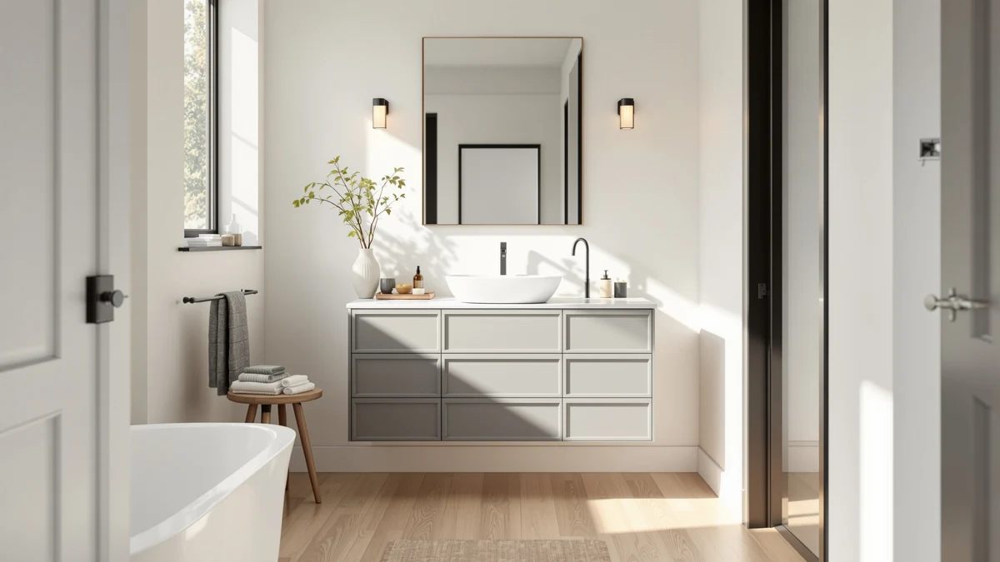

Best Bathroom Vanity vs Cabinet (2026) | Best Bathroom Vanities


Things to Know Before You Buy
- A vanity includes a sink; a cabinet does not. The vanity ties into your plumbing, so it needs a water supply and a drain. A cabinet just stores things and can sit anywhere.
- Vanities cost more and take longer to install. Expect $475 to $1,560 for the units we cover here, plus a plumber if you move the drain line.
- A cabinet adds storage without touching plumbing. You can hang or stand one in an afternoon, which suits renters and quick refreshes.
- Measure your wall and door swing first. A 72-inch double vanity needs real floor space; a floating cabinet fits where a vanity never would.
- Many bathrooms use both. A vanity handles the sink and a separate cabinet catches the overflow of towels and toiletries.
The bathroom vanity vs cabinet question trips up a lot of people planning a bathroom refresh, because the two words get used loosely at the hardware store and online. A vanity is the unit that holds your sink, and a cabinet is a storage box with shelves or drawers. Once you see them as two different jobs, the choice gets a lot simpler.
You are usually asking one of two things. Either you need a new sink station and want the storage that comes under it, or your sink is fine and you just need somewhere to put towels and toiletries. We compared build quality, price, and daily use across seven real units so you can match the right piece to your room instead of guessing at the store.
Quick Answer
In the bathroom vanity vs cabinet matchup, a vanity wins when you need a sink plus storage in one piece, and it anchors the look of the room. A cabinet wins when your plumbing is already set and you just need more shelf space fast and cheaply, with no plumber involved. Most full bathroom projects end up using a vanity for the sink and a cabinet for the extra storage.
What is Bathroom Vanity?
A bathroom vanity is the furniture piece that surrounds and supports your sink. It combines four things into one unit: the basin, the countertop around it, a base cabinet underneath for storage, and the connection points for your water supply and drain. That all-in-one design is what sets a vanity apart from a plain storage cabinet.
Sizes range widely. A compact 30-inch vanity like the WindBay suits a half bath, while a 72-inch double-sink model like the Alphabath gives two people their own basin in a shared primary bathroom. You can pick a freestanding unit that sits on the floor or a floating one that mounts to the wall and leaves the floor open.
Because a vanity carries water, it needs to handle a damp environment year after year. The units we cover use sealed wood or engineered wood frames with stone or resin countertops that resist splashes. A vanity also does design work: it sets the color, the hardware finish, and the overall style of the room, which is why so many renovations start with picking one.
What is Cabinet?
A bathroom cabinet is a storage unit with shelves, drawers, or doors, and nothing else. It holds towels, toiletries, cleaning supplies, and the clutter that never fits under the sink. The cabinet is the simpler piece: no basin, no countertop plumbing, no water lines to connect.
Cabinets come in a few common forms. A wall cabinet or medicine cabinet hangs above or beside the sink. A linen tower stands tall and narrow against a wall to use vertical space. An over-the-toilet cabinet reaches into the dead space most bathrooms waste. Each one installs with screws and wall anchors, so you skip the plumber entirely.
That independence from plumbing is the cabinet's biggest strength. You can add one to a finished bathroom without opening a wall, move it if you rearrange, and take it with you if you rent. The trade-off is that a cabinet does not solve a sink problem. If your basin is cracked, dated, or missing, a cabinet leaves that gap open, and you still need a vanity or a standalone sink to close it.
Head-to-Head: Build Quality & Durability
On build quality, the difference comes down to what each piece has to survive. A vanity sits at the wettest spot in the room, so it uses moisture-sealed frames and stone or resin tops that shrug off standing water and splashes. The LUXOAK 61-inch farmhouse model uses a solid wood frame, and the pricier Blossom and Alphabath units add sink basins and faucets that carry their own warranties.
A cabinet faces an easier life. It stores dry goods away from the basin, so manufacturers can use lighter engineered wood or laminate without the same water-damage worry. That keeps a cabinet cheaper to make, but it also means a bargain cabinet can warp fast if you install it in a steamy room with poor ventilation or set a wet towel on a bare shelf.
Over ten years, a well-sealed vanity tends to outlast a budget cabinet because it was engineered for the harder job. The failure points differ too. A vanity's weak spots are the faucet, the drain seal, and the counter joint, all of which you can repair. A cabinet's weak spot is the panel itself, and a warped panel usually means replacement. If you want one piece that lasts through a full renovation cycle, the vanity is the sturdier long-term bet.
Head-to-Head: Price & Value
Price is where the two pieces split hardest. The vanities we track run from about $475 for the LUXOAK 61-inch up to $1,560 for the Alphabath 72-inch double, and that figure covers only the unit. Add a faucet, a plumber, and any drain rework, and a mid-range vanity install often lands a few hundred dollars above the sticker. A standalone cabinet, by contrast, usually costs a fraction of that and installs with a drill and an hour of your time.
The value math depends on what you actually need. If your sink is failing, the vanity earns its higher price because it fixes the basin and the storage in one purchase. If your sink is fine, paying vanity money to gain shelf space makes no sense, and a cabinet delivers that storage for less. Buy the piece that solves your real problem, not the one with the bigger feature list.
Head-to-Head: Use Experience
Day to day, the two pieces feel different from the first morning. A vanity is where you actually get ready. You lean on the counter, run the tap, and reach into the drawers below for your toothbrush and razor. A double-sink model like the T4TREAM 48-inch or the Alphabath 72-inch lets two people share the room without elbowing each other, which matters most in a busy household bathroom.
A cabinet plays a quieter support role. You open it a few times a day to grab a fresh towel or restock the soap, then close it and forget it. That makes placement the key factor. A linen tower in the corner or an over-the-toilet unit puts storage where you need it without crowding the sink, and a wall-mounted cabinet keeps supplies at eye level.
Cleaning shows the split clearly. A vanity counter needs a daily wipe because toothpaste, water spots, and hair collect there. A cabinet mostly needs a dusting now and then. Installation reflects the same gap. You bolt a cabinet to the wall and load it, while a vanity ties into the drain and supply lines, so a leak or a slow drain becomes your problem to manage. If you want the least fuss, the cabinet is easier to live with; if you want a functional wash station, only the vanity delivers it.
When to Choose Bathroom Vanity
Go with a vanity when your project touches the sink. If you are gutting a bathroom, replacing a cracked basin, or upgrading a dated pedestal sink, the vanity solves the plumbing and the storage in one purchase. It also sets the tone for the whole room, so a renovation built around a vanity reads as intentional rather than pieced together.
A vanity is the right call when two people share the space and you want a double-sink layout like the T4TREAM 48-inch or the Alphabath 72-inch. It also wins when you crave counter space for daily grooming or want closed storage hidden right under the basin. You do need the floor room, a plumbing connection, and a bigger budget, so plan for those before you buy.
When to Choose Cabinet
Go with a cabinet when your sink already works and you just need more room to store things. A cabinet fixes the towel pile on the floor and the toiletries crowding the counter without asking you to touch the plumbing or hire anyone. You mount it, load it, and move on.
A cabinet is the smart pick for renters, since you can take it with you, and for tight bathrooms, where a linen tower or an over-the-toilet unit uses vertical space a vanity cannot reach. It also suits anyone on a small budget who wants a visible upgrade this weekend. The limit is simple: a cabinet gives you storage, not a sink, so if the basin itself is the problem, you still need a vanity to fix it.
Our Top Picks
If your project points you toward a vanity, these three units cover the range most buyers shop. One leads on style and value, one keeps the price sensible, and one steps up in size and finish for a larger primary bathroom.

Editor’s Pick
LUXOAK 61" Farmhouse Bathroom Double
A 61-inch farmhouse double vanity that pairs a solid wood frame with a stone-look top, giving you two sinks and closed storage at a fair price.
$474.99
Check Price on Amazon
Best Value
Alphabath 72 Inch Double Sink
A 72-inch double-sink vanity sized for shared primary bathrooms, with wide drawers and two basins so a couple can get ready at the same time.
$1,559.99
Check Price on Amazon
Premium Choice
LUCKWIND 72" Bathroom Vanity Sink
A 72-inch single-basin vanity with a full-length counter, ideal when you want one big sink and a long stretch of usable workspace.
$849.99
Check Price on AmazonFrequently Asked Questions
What is the difference between a bathroom vanity and a cabinet?
A bathroom vanity combines a sink, a countertop, and storage in one furniture piece that connects to your plumbing. A cabinet stores towels, toiletries, and supplies but has no sink or water connection. In the bathroom vanity vs cabinet choice, you pick a vanity when you need a wash station and a cabinet when you only need extra storage.
Can you use a cabinet as a bathroom vanity?
You can convert a sturdy cabinet or dresser into a vanity by cutting the top for a sink, sealing the wood against moisture, and running the drain and supply lines. It costs less than buying a new vanity, but you take on the plumbing work and the water-damage risk yourself. A ready-made vanity arrives pre-cut and sealed for a wet room.
Is a vanity or a cabinet better for a small bathroom?
For a small bathroom, a wall-mounted floating vanity like the WindBay 30-inch clears the floor and makes the room feel larger while still giving you a sink. If you already have a pedestal sink and just need storage, a slim cabinet costs less and takes no plumbing. Match the pick to whether the room needs a wash station or only shelf space.
Do you need a plumber to install a bathroom vanity?
You need a plumber if the vanity moves the drain or supply lines, or if you are not comfortable connecting the P-trap and shutoff valves yourself. When the new vanity lines up with the existing plumbing, a confident DIYer can handle it in an afternoon. A cabinet skips this entirely, since it only bolts to the wall.
Can you have both a vanity and a cabinet in one bathroom?
Yes, and many bathrooms work best that way. The vanity handles the sink and the storage directly under it, while a separate linen tower or over-the-toilet cabinet catches the towels and supplies that never fit below the basin. Using both lets you keep the counter clear without cramming everything into one unit.
Final Verdict
The bathroom vanity vs cabinet decision is not really a contest, because the two pieces solve different problems. Choose a vanity like the LUXOAK 61-inch farmhouse double when you need a sink station plus storage and want a piece that anchors the room, and choose a cabinet when your plumbing is set and you only need more shelf space fast and cheaply. If your budget and floor plan allow, the tidiest bathrooms use a vanity for the sink and a separate cabinet for the overflow.